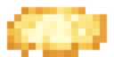

Tender la cama
ChickenStreaks
Buenos hábitos, en familia.
Lavarse los dientes
Aprobada
Recoger juguetes
Repítela
Tareas
Tus hijos marcan lo que hicieron y tú lo apruebas.

12 huevosIr al parque20
Faltan 8 huevos
Su gallina
Cada tarea le da huevos para cambiarlos por premios que tú eliges.
Racha de Sofi
7días

1 de 2 comodines
En pausa
Hoy empieza otra.
Mejor racha: 12 días
Rachas sin presión
Con comodines y perdón. Nunca rankings entre hermanos.

¿Ya tienes cuenta? Inicia sesión